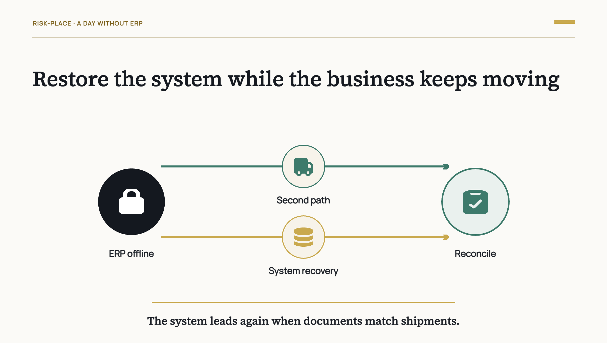

A day without ERP divides into two parallel tasks. One team restores data and access. Another maintains a pre-selected flow of orders by hand. Without shared rules, recovery creates a second crisis: working out what actually left and what the company promised.

In the morning, choose the day you can preserve
Do not promise normal output out of habit. Bring together the site, sales, warehouse and IT to define a limited list of work: which items are known from a current export, which documents can be issued, who may name a date and where the manual path ends.
Record that volume and share it with everyone speaking to customers. One confirmed list is more useful than an optimistic promise that changes after every call.
Every manual operation leaves a record
Use numbered forms or one shared log. Record the time, order, item, quantity, responsible person and shipping confirmation. Notes in personal messaging apps do not replace the shared ledger: after a shift change, they would need to be reconstructed from memory.
- Before shipping, check the item against the dated export.
- After departure, record the actual quantity and document.
- Before a new promise, update the balance available to the manual path.
- At shift handover, sign off completed operations and list those still open.
This order may feel slower at first. It prevents the company from promising the same batch twice and makes the return to normal accounting easier.
Counterparties receive one confirmed answer
Ask the supplier to hold or reschedule a delivery until the site confirms acceptance. Give the customer a date only for items on the confirmed list. Base the public response on the same facts: what is unavailable, how supplies are affected and when the next update will arrive.
Keep these messages separate from discussions about ransom, insurance payment or suspected causes. Each question has its own responsible person and decision process. The customer primarily needs a reliable date and a next contact.
The system returns after reconciliation, not after switch-on
The restored database may be technically available without yet reflecting the manual day. Enter operations from the log, match documents to actual shipments, resolve discrepancies and only then move new orders back into the system.
A ransomware readiness check helps prepare this day by connecting the second path, decision rights, counterparty messages and the return to normal accounting.
Frequently asked questions
Only under predefined rules and after accounting for every movement since the export. The responsible person must understand the limits of the data and confirm each operation.
After the restored system reflects the manual operations, documents match actual shipments and the responsible managers confirm the return to the normal process.
A short statement should use the same confirmed facts given to customers: what is unavailable, what the impact is and when the next update will arrive.
Is your team ready for the first hour of a crisis?
You test a plan by running a scenario. Reading it is not enough. The assessment shows the gaps, and the corporate format works through them with your team on your own processes.